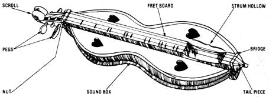

Even homesteaders need to relax and enjoy themselves from time to time, right? And almost everybody these days wants to cut his or her cost of living. So how about a little do-it-yourself entertainment?
And that's what this column is all about. Down-home music that you can make . . . and the instruments (which, in some cases, you can also make!) to play that music on.
The important thing is th at this is your column. If you like it, write to me and let me know. If you have some ideas for this feature, let me know that. I'm open to any suggestions or information you care to contribute. I'll even try to answer your questions about down-home music . . . butboth for the benefit of all MOTHER 's readers and to ease my correspondence loadI'll deal with those questions, whenever possible, here in this column . . . rather than in personal letters.
Address your correspondence for this column and this column only-to Marc Bristol, 18520 312th Ave. N.E., Duvall, Wash. 98019.
Since this column began, I've often been asked to cover the subject of the Appalachian dulcimer. I've waited until now to do so, however, because I wasn't-until recently-either a dulcimer owner or player. Oh sure, I've tried the Instrument now and then, when I ran across one at somebody's house, but I never caught the bug.
In spite of that, when David Johnston and Rose LeClere (of Black Mountain Instruments) wrote and offered to send me one of their dulcimer-building kits-to help me become more acquainted with the instrument-I couldn't pass up the opportunity.
I've since discovered that there's a steadily growing group of dulcimer musicians becoming involved in American folk music today. And many of these "new" artists have been experimenting with-and stretching the limits of-the lap dulcimer's musical capabilities. After all, plucking simple single-note melodies is a good place to begin . . . but chances are that learning such advanced techniques as chording up the neck and finger-picking may prove to be even more rewarding.
So if you've decided to take up dulcimer playing, do think of it as an easy place to get started in string music . . . but also set your sights on the horizon and keep truckin'. You'll find that a lot more is possible with the uncomplicated instrument than playing "Mary Had a Little Lamb"!
The traditional Appalachian dulcimer is also often referred to as a lap, plucked, or fretted dulcimer. The larger hammered dulcimer, on the other hand, is a forerunner of the piano, and was probably the first to bear the name "dulcimer". Both, however, are members of the zither (or harp) family.
The Appalachian dulcimer is traditionally played sitting down, with the instrument set across the lap. Notes are fretted either with the fingers of the left hand or with a "noter stick", while the right hand strums with a pick (or perhaps a feather quill). The traditional instrument has three strings . . . one that's used to play the melody, and two drones. (More modern versions sometimes have two melody strings.) Some of today's dulcimer players add a neck strap to the instrument, and play it standing up. And many accomplished pickers now fret whole chords, fingering all of the strings in the process.
Most common lap dulcimers are either "hourglass" or "teardrop" shaped. Other designs are possible. though, and occasionally you'll see a "courting dulcimer", which is actually two musicmakers in one. (The man and woman play facing each other, with the instrument across both their laps.)
Although dulcimers are usually constructed of wood, I recently received one made from corrugated cardboard. And here's the kicker: It has a remarkably good sound!
So, with the help of the folks at Black Mountain Instruments and the editor of Dulcimer Players News, I located David Cross . . . the man who makes the cardboard dulcimers.
David designed the instrument as a demonstration project for the children in his third grade class. He wanted to show the youngsters how folks tucked way back up in the hills might put an instrument together out of whatever materials they could find. The frets on his dulcimers, for instance, are simply finishing nails, each one bent 90° at the tip and pounded into a small drilled hole at the end of a slot designed to hold the "fret" in place. The slot isn't any wider than a saw blade (use a miter saw, with a cutting edge 1/10" across, if you want to duplicate Dave's design).
To simplify things even further, David used inexpensive guitar tuning pegs instead of the "friction" pegs more commonly found in the traditional mountain instruments. So if you're scrounging to find parts, your nearest junkyard or salvage shop may be able to provide you with an inexpensive old guitar. . . whose tuners can be used for two traditional dulcimers.
David is now producing three-string model kits that range in price from $7.50 (you find your own cardboard and wood) to $14.50 (all parts are supplied, and the wood and cardboard are precut). He also produces fourstring kits for about a dollar more, and finished four-string instruments that cost $22.50 postpaid.
Dave has even written a do-it-yourself manual called Groups Building Dulcimers, which comes free with orders for five or more kits (or you can purchase a copy for $2.00 plus 60 cents postage). There are bulk ordering discounts as well . . . for those of you who have groups of friends who might be interested in building dulcimers together.
Finally, if you'd like a set of David's do-it-yourself instructions (and are planning to scrounge or purchase your own "parts"), just order his booklet, Make Your Own Dulcimer Using Common Materials , for $2.50 plus 60 cents postage. (To request information or to place an order with Mr. Cross, write Backyard Music, Dept. TMEN, 808 South 48th Street, Philadelphia, Pennsylvania 19143. )
Folks who'd like to build a fine wood dulcimer would be well advised to contact Black Mountain Instruments, Dept. TMEN, 16264 Main Street, P.O. Box 779, Lower Lake, California 95457. The firm's Kit No. 56K, which the owners sent me, sells for $53. It consists of precut parts -including mahogany sides, back, and fretboard, plus a spruce top-and all the sound holes are predrilled. The fret board is already assembled, and (according to the instructions) the kit can be put together in three or four evenings. No special tools are required, but white glue or masking tape (used for securing clamps) will be needed.
The wood used in this kit is very beautiful, and would certainly inspire any builder to be meticulous in finishing his or her creation. And any extra time spent on the "dressing up" process will certainly not be wasted, since you'll likely be all the more satisfied with your instrument as a result of such care.
Black Mountain products also include cherry wood and walnut dulcimer kits . . . as well as finished instruments: The firm's top-of-the-line spruce and walnut model sells for $125. (Ready-to-play units, however, are sold only with a case . . . which will cost an additional $16.) If you're interested, write to the company and tell the folks there that MOTHER sent you!
Those of you who'd like more information about this old-timey instrument might want to pick up a copy of Dulcimer Players News. This quarterly 40-page publication carries everything from festival reports to instructional articles on both hammered and lap dulcimers . . . plus songs, interviews, and book and record reviews. The subscription price is $6.00 a year, and back issues are available for $1.50 each. Just send the money with your name and address to Dulcimer Players News, Dept. TMEN, P.O. Box 2164, Winchester, Virginia 22601. (The magazine's editor, Maddie MacNeil, also manages the Blue Ridge Dulcimer Shop . . . a mail order service through which you can purchase how-to books, kits, and finished instruments. Ask for a free catalog when writing to DPN. )
While attending the 1980 Musical Saw Festival in Santa Cruz, California (it was a wonderful festival, definitely a "don't miss" for saw players or anyone who's in the right area during September), I stopped in at the CapriTaurus Folk Music booth and put myself on the firm's mailing list.
Not long after doing so, I received a catalog containing a large selection of dulcimers, kits, cases, books, and records . . . including some items I hadn't seen in other listings. For $3.00 you can have not only the CapriTaurus catalog, but a regular newsletter and a subscription to Folk Music Almanac. Write to CapriTaurus Folk Music, Dept. TMEN, P.O. Box 153, Felton, California 95018.
During my stay in California, I also talked with several people from Kicking Mule Records. . . who subsequently sent me a copy of the latest album from Robert Force and Albert d'Ossché. The record, entitled Cross Over , brings the dulcimer down out of the hills and into the realm of many different kinds of music.
The influences of Africa, the Caribbean, Brazil, Iceland, India, modern folk, jazz, and rock are easily heard in this album. My favorite cut is "Paradise Boy (Hush Your Eyes)", a calypso accompanied by steel drums, congas, and several voices.
I also received an album by Mark Nelson called Fiddle Tunes on Dulcimer. The music is all instrumental, and features three different types of dulcimers as well as fiddle, mandolin, and bodhran.
All of Kicking Mule's LP's are available with instructions or tablature materials, for a small extra cost. (The outfit's free catalog, which lists over 25 albums, is available from Kicking Mule, Dept. TMEN, P.O. Box 3233, Berkeley, California 94703.)
Are you wondering what happened to that Homegrown Music record I was talking about a few issues back? Well, it's still in the works . . . and, when ready, will be accompanied by a book featuring the arrangements to the recorded songs.
One of the projects that got in the way of that album just happened to be another recording effort (which will have born fruit by the time you read this), featuring the sounds of (among other musicians) the four dudes you've seen in the photo accompanying this column in most back issues of MOTHER. The disk is recorded by the Okie Doke Band, and centers on western swing. Copies can be obtained, for $4.00 postpaid, from King Noodle Records, Dept. TMEN, 8056 Southeast 72nd Street, Mercer Island, Washington 98040.
I'll be doing a bit of touring with Okie Doke in 1981, too. So if you happen to hear we're going to be in your area, come on out . . . I'd like to have a chance to meet the people I write to! And, if you have any questions you'd like me to address in this column, please contact me at my new address: 18520 312th Avenue N E., Duvall, Washington 98019.
Finally . . . many thanks to David Johnston, Rose LeClere, David Cross, and Maddie MacNeil for the help they've given me in preparing this column. You'll be reading more about dulcimers here in the future!
|
Down-home musician Marc Bristol sings and strums a tune at a local music festival |
 |
|